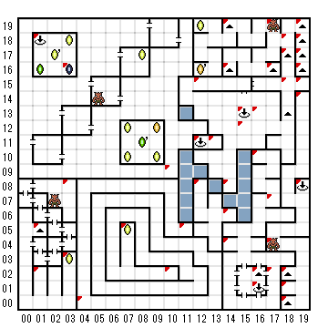

【 x：1，y：18 】
B2F（0.9）へ
【 x：1，y：5 】
１F（19,19）へ
【 x：1，y：2 】
２F（12,7）へ
【 x：3，y：16 】
１F（3,5）へ
【 x：3，y：8 】
B1F（8，5）から
【 x：3，y：3 】
B3F(2,17)へ
【 x：4，y：0 】
出口はこちら←←←←←←←←
【 x：7，y：5 】
B3F（2,17）へ
【 x：10，y：9 】
B２F（10,8）から
【 x：10，y：2 】
1F(3,0)へ
【 x：11，y：5 】
１F（9,9）から
【 x：12，y：15 】
B1F（３，５）へ
【 x：12，y：11 】
２F（14,9）
【 x：12，y：8 】
３F（１９，８）から
【 x：13，y：11 】
(1)
１F（11,15）から
(2)
１F（3,１）から
【 x：14，y：19 】
１F（6,19）へ
【 x：14，y：16 】
１Ｆ（19,19)へ
【 x：14，y：8 】
(1)
１Fのシュート（17，15）から
(2)
１Fのシュート（16，16）から
(3)
1Fのシュート（7,18）から
(4)
１F（13,11）から
(5)
B1F(3,12)から
【 x：14，y：6 】
１F（３，５）へ
【 x：14，y：4 】
＊LV１しか呼べない
ほこりにまみれた床を慎重に探し、
ついに 君は 古代の岩に刻まれた
ペンタグラムを見つけ出した。
そしてその輪の中に入らないように
気をつけながら、腕を振り上げ、
召喚の呪文を高らかに唱えた！
【 x：15，y：13 】
２F（0,9）
【 x：15，y：12 】
出口はこちら
【 x：16，y：13 】
ほこりにまみれた床を慎重に探し、
ついに 君は 古代の岩に刻まれた
ペンタグラムを見つけ出した。
そしてその輪の中に入らないように
気をつけながら、腕を振り上げ、
召喚の呪文を高らかに唱えた！
【 x：16，y：10 】
B1F（1,2）から
【 x：16，y：2 】
１F（19,19）へ
【 x：16，y：1 】
２F（3,7）
【 x：17，y：19 】
LV1しか呼べないペンタグラム
【 x：17，y：16 】
２Ｆ（1,14）へ
【 x：17，y：7 】
出口はこちら→→→→→→
【 x：17，y：4 】
ペンタグラム
【 x：17，y：2 】
出口はこちら！
↑↑↑↑↑↑
【 x：18，y：18 】
出口はこちら←←←←←←←
【 x：18，y：17 】
１F（19,19）へ
【 x：18，y：15 】
出口はこちら→→→→→→
【 x：18，y：2 】
１F（19,19）
【 x：18，y：1 】
１F（3,5）へ
【 x：18，y：0 】
２F（1,14）へ
【 x：19，y：19 】
２F（1,14）へ
【 x：19，y：18 】
１F（19,19）へ
【 x：19，y：17 】
１F（16,3）へ
【 x：19，y：16 】
１F（6,19）へ
【 x：19，y：15 】
１F（15,14）から
【 x：19，y：14 】
(1)
２F（14,14）から
(2)
B2F(7,2)から
【 x：19，y：8 】
３F（１２，８）へ